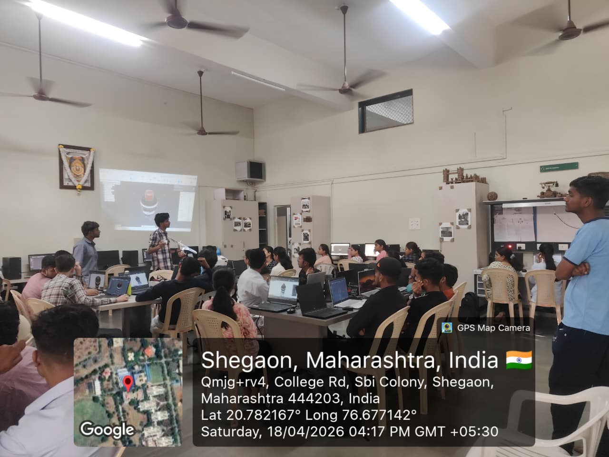
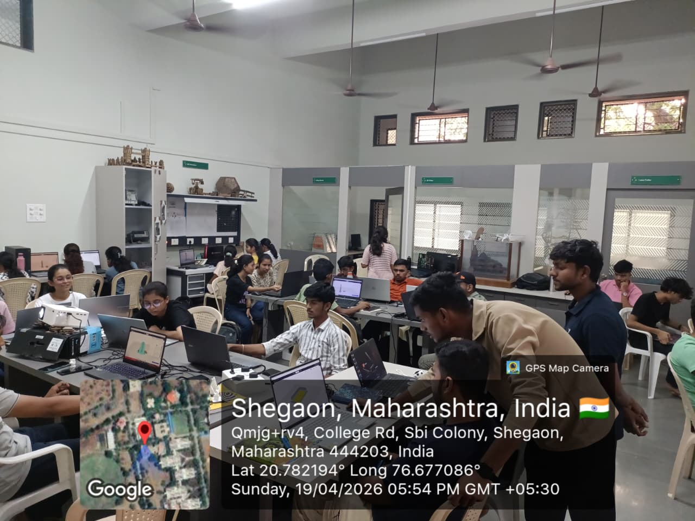
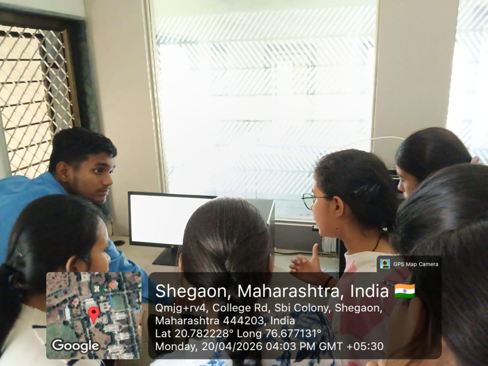
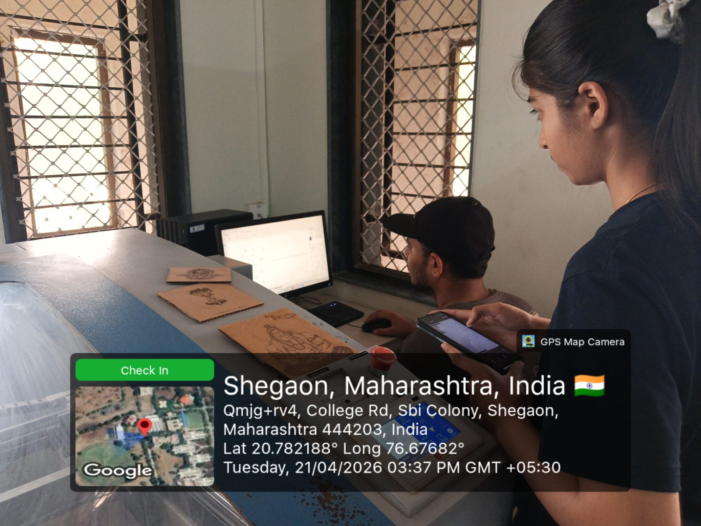
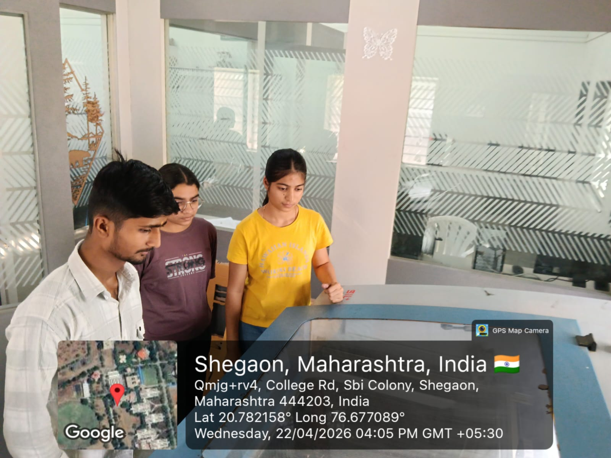
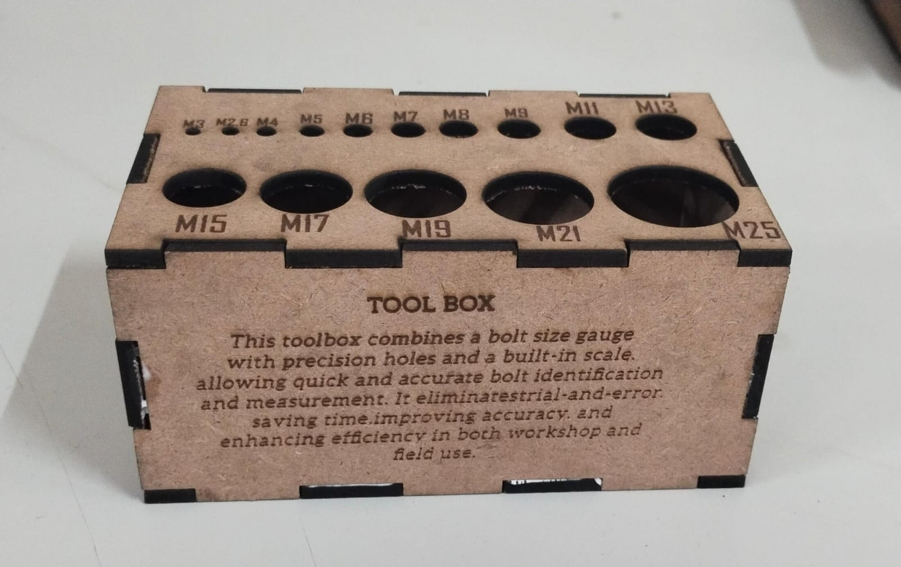

Module 05 · CO₂ Laser Cutter
From vector design to precision-cut parts — mastering the laser cutter from machine basics to final project
The first day focused on understanding the machine — what a CO₂ laser cutter is, how it works physically, all of its components, and the critical safety rules that must always be followed.
Laser Tube, Beam Path Mirrors, Focusing Lens, Cutting Head, Honeycomb Bed, Air Assist, Exhaust Fan, and Controller BoardAcrylic, Wood (MDF, Plywood), Cardboard, Leather, and materials that must never be cut (PVC, polycarbonate — they produce toxic fumes)Air Assist — a constant stream of air blown at the cut point to reduce burning and keep the lens clean
Machine PhotoLearning to operate the laser cutter — setting up the material, focusing the beam, and understanding power and speed settings that determine the quality of every cut.
honeycomb bed and secured it to prevent movement during cuttingControl Panel to set the laser Origin (start position) and frame the job before cuttingPower (%) — how intense the beam is, and Speed (mm/s) — how fast the head movesZ-height offset adjustment for materials of different thicknesses
Test CutsLearning to prepare files for the laser cutter — understanding what file formats the machine accepts, how to use LightBurn software, and how to convert a CAD file into a laser-ready job.
DXF (from Fusion 360 or AutoCAD), SVG (from Inkscape or Illustrator), and AIDXF file exported from Fusion 360 into LightBurn — understood the import process and how to check for open paths or duplicate linesNode Editor in LightBurn to fix open paths that would cause incomplete cutsLine mode (vector cut/score) and Fill mode (raster engrave)Arrange toolsPreview window to verify cut order and estimated job time
LightBurn ScreenshotPutting everything together — running the first real cut on the project material and beginning the fabrication of the final project.
Frame preview to confirm positioningcharring, incomplete cuts, or melted edges — and noted adjustments for the next run
Cut in ProgressExpanding the project — adding engraved elements, cutting additional components, and refining the fit and finish of all cut parts.

Engraved PartsThe culmination of the laser cutting module — assembling all cut and engraved parts into the final project and presenting the completed work.

Final Project